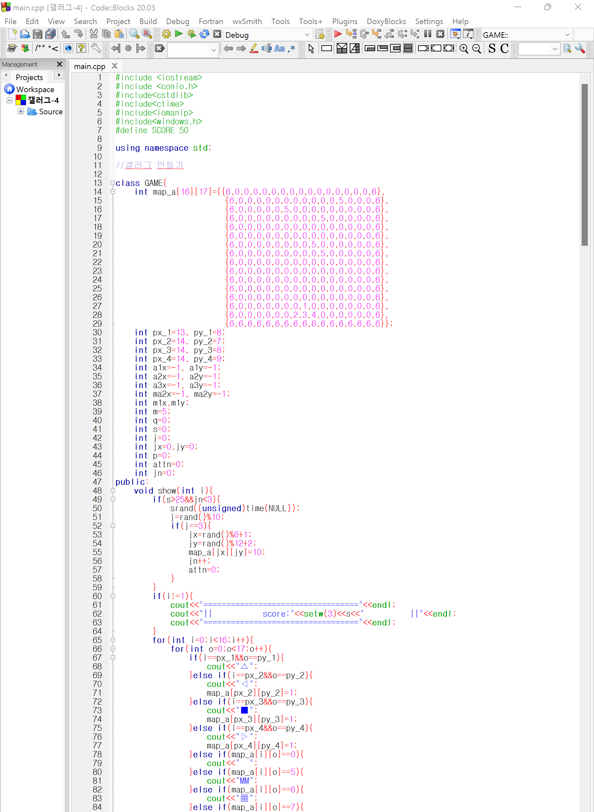
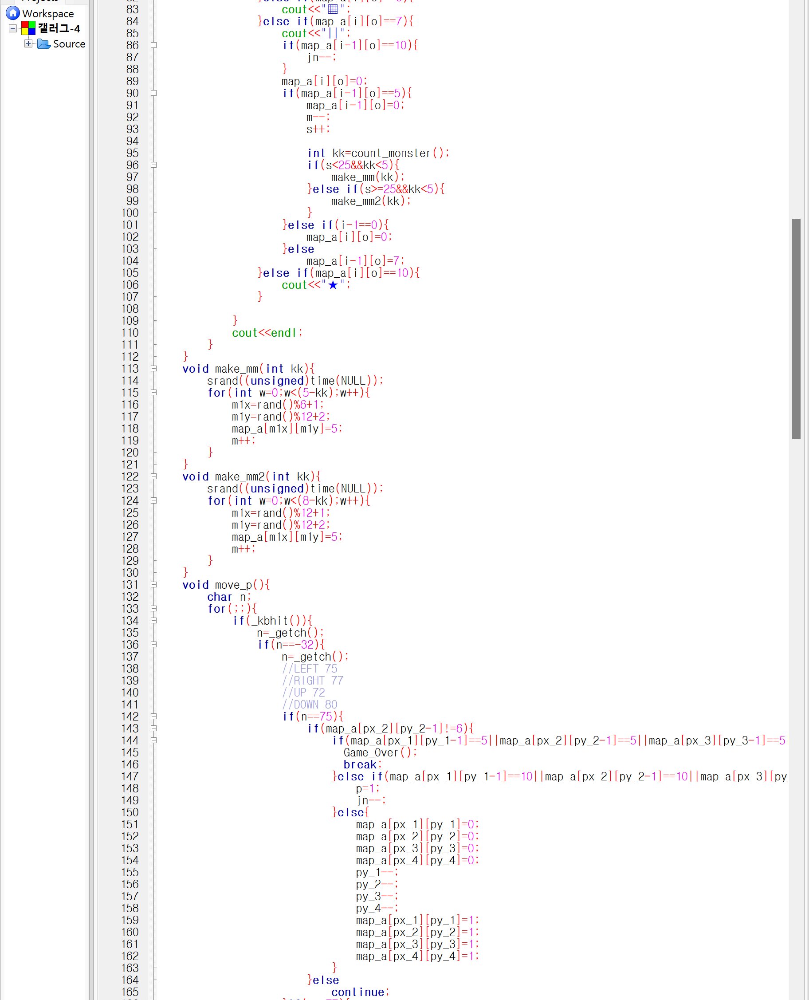
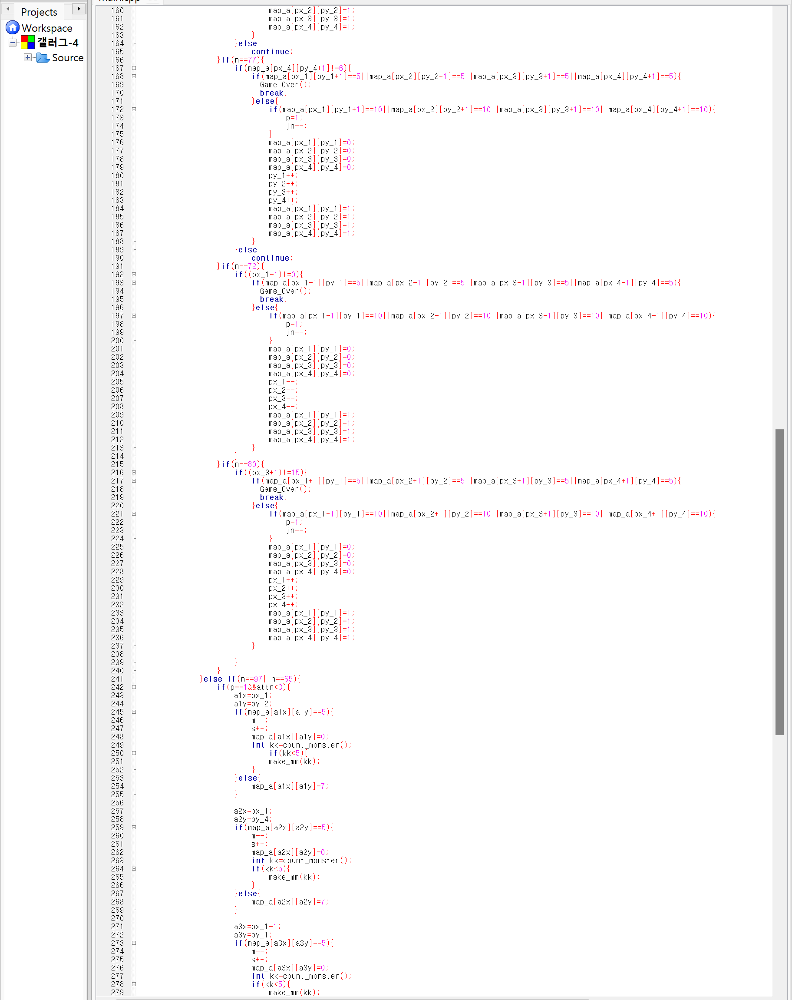
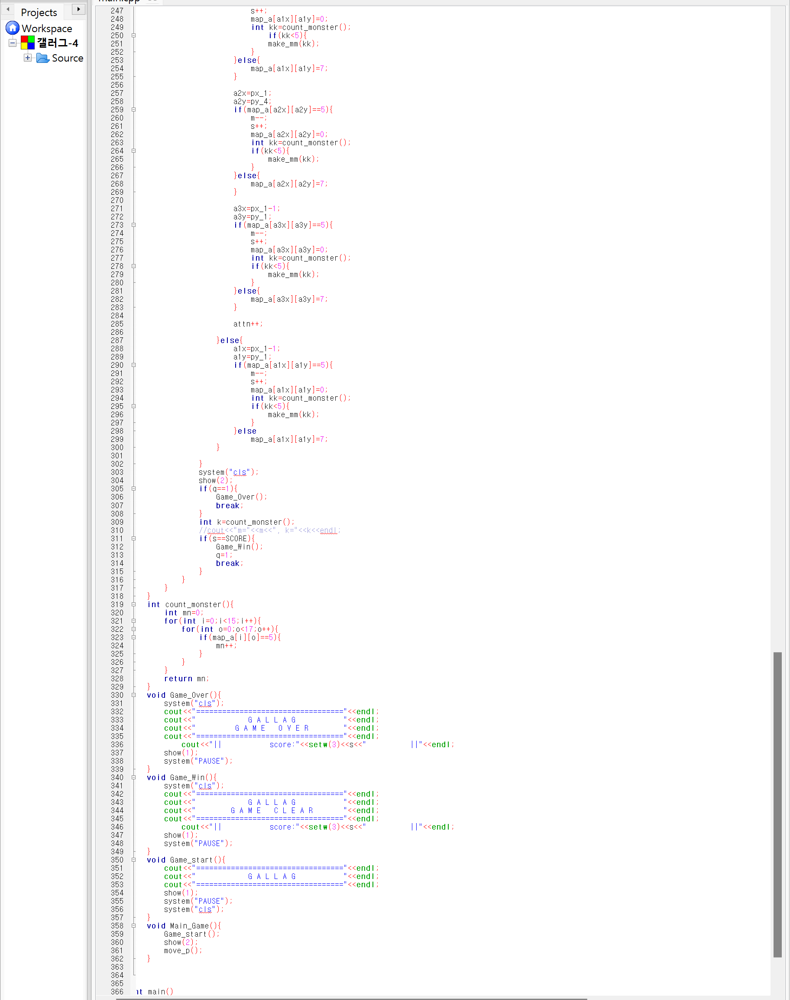
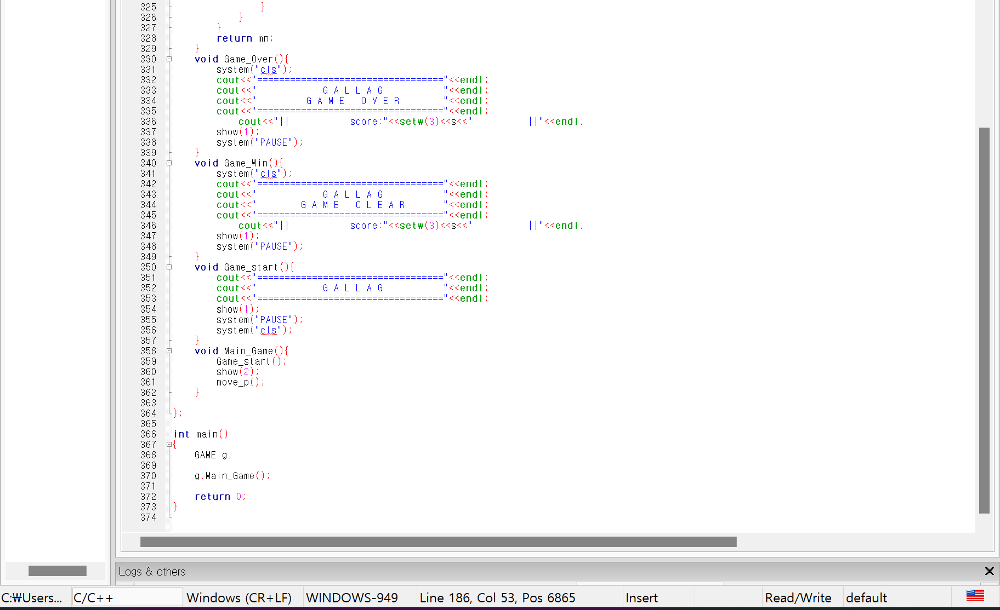
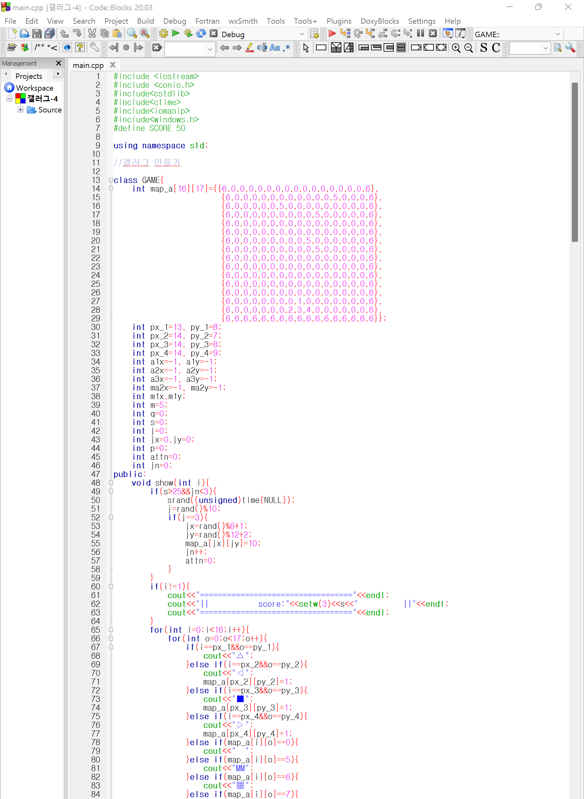
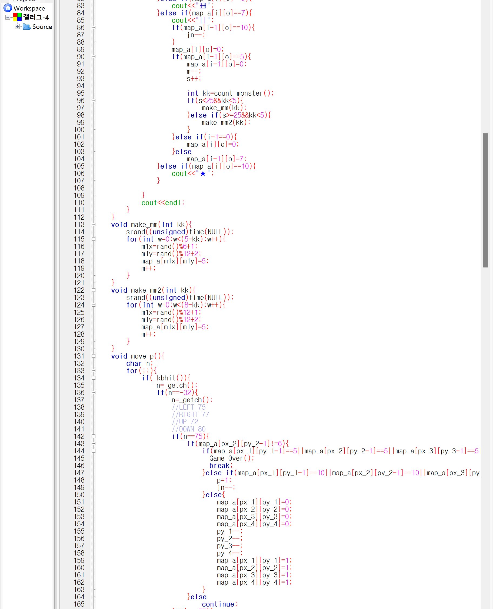
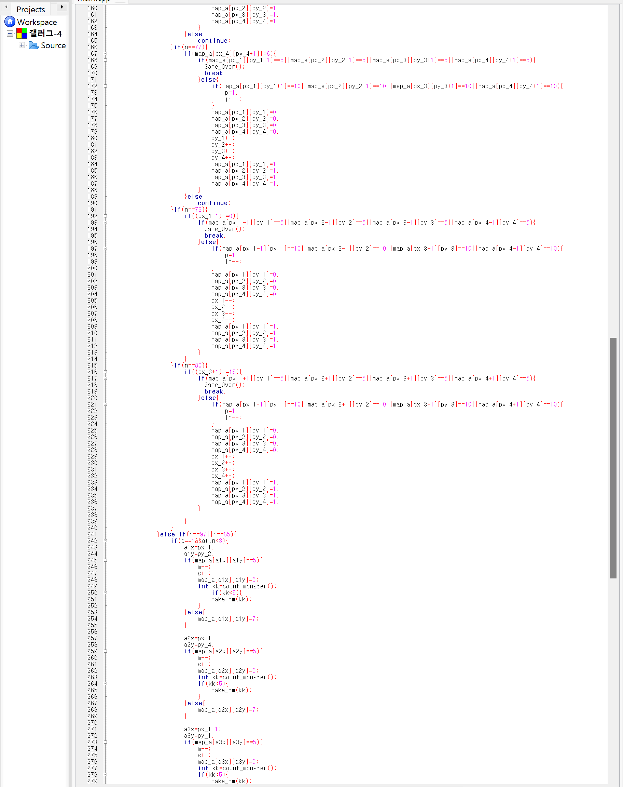
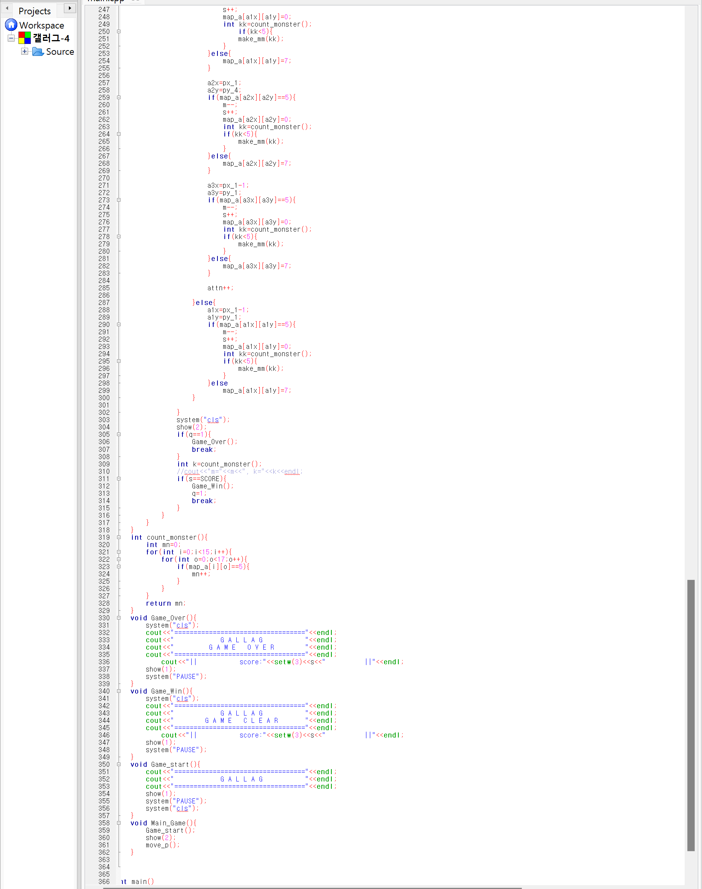
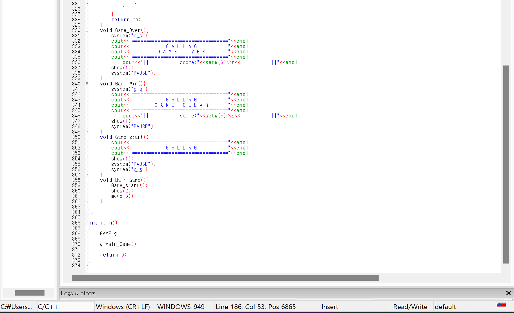

5번째 차시는 c++코드를 사용하여 게임 프로그램을 제작하였습니다.
여태까지 배웠던 c++언어로 갤러그와 비슷한 비행기 게임을 제작해보았습니다.
주로 쓰인 것은 class로, 그 구조가 이전에 학습했던 것보다 심화되었고 기호 상수의 사용으로 게임 제작을 보다 쉽게
수정할 수 있도록 만들었습니다.
또한 다같이 프로그램을 작성하기 위해서 서로 자신이 해둔 부분에 대해 설명하기 위해 '//'와 '/**/' 같은 주석 처리 또한 자주 사용하여
팀으로 프로그램을 제작한다는 것을 강하게 느끼며 협동심과 팀에게 의지하고 배려하는 것을 배웠습니다.
게임을 만들며 2차원 배열을 사용했는데, 활용 방법이 다양하여 어떤식으로 활용해야 할까 수정하는 과정에서 각자의 아이디어를 내고
계속 다르게 만들어보며 같이 시행착오를 겪는 과정도 완성하는데 있어 모두를 끈끈하게 만들어주었습니다.
게임에는 요소들이 많기 때문에 그러한 게임적 요소들을 추가하려고 아이템을 넣거나 시작, 끝 화면을 제작하는 등의 노력을 했으며,
system("cls")의 사용으로 화면이 자주 끊기긴 하지만 모두 열심히 노력한 결과이기에 모두가 결과에 만족한 시간이였습니다.